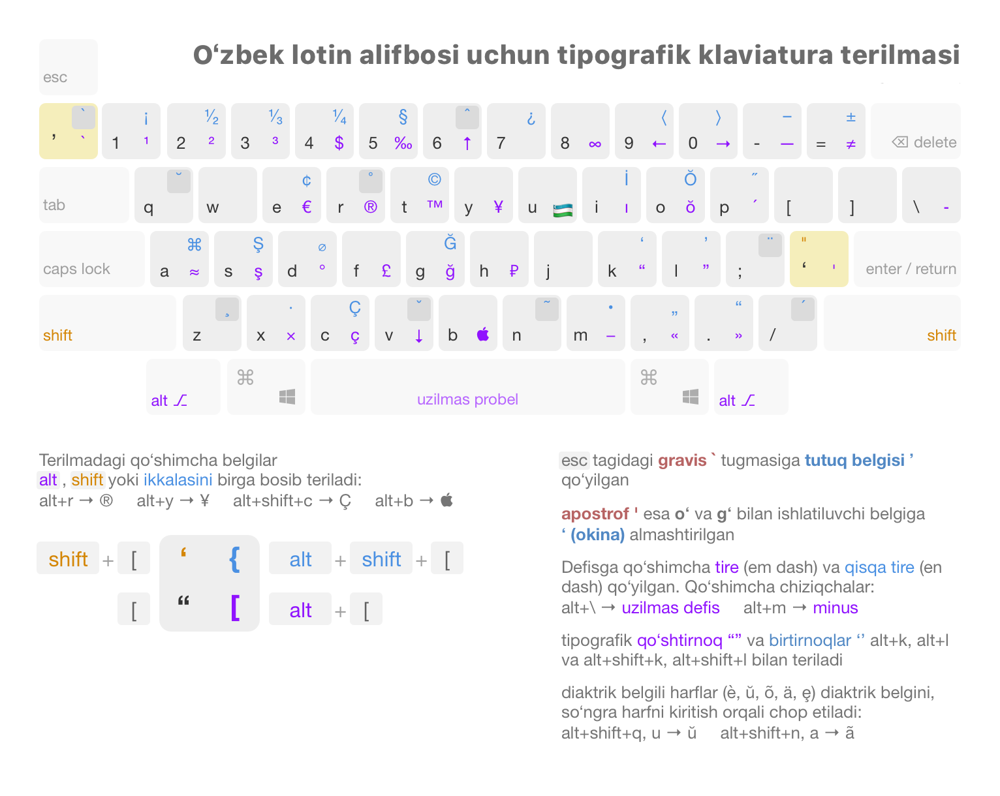
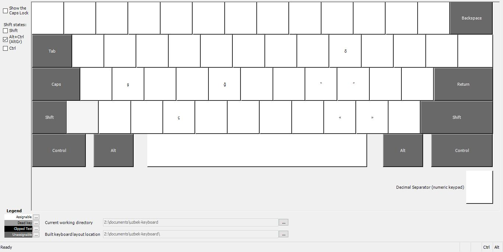
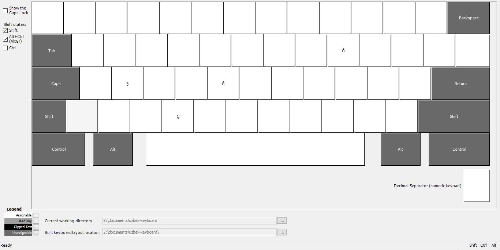

A typographically correct keyboard layout for Uzbek, featuring 2023 alphabet updates and quick access to special characters — for Linux & Windows.

AltGr,
blue keys require
Shift+AltGr.
AltGr → Ş, Ç,
Ö, Õ, Ğ, ı, İ. AltGr+` → ʼ (tutuq
belgisi). AltGr+' → ʻ (used in
Oʻ/Gʻ). Plus dashes, guillemets, curly quotes,
currency signs.
AltGr needed. W→Ş/ş,
[→Õ/õ, ]→Ğ/ğ.
Add this repository as a flake input to your
flake.nix:
# flake.nix { inputs = { ... # Add this line to your inputs uzbek-keyboard.url = "github:mirrrjr/uzbek-linux-and-windows-keyboard"; } outputs = { ... # Add this line to your outputs uzbek-keyboard, } @ inputs: { nixosConfigurations."nixos" = nixpkgs.lib.nixosSystem { modules = { ... # Add this line to your modules uzbek-keyboard.nixosModules.module } } } }
Then enable it in configuration.nix:
# configuration.nix services.xserver.xkb.uz-enhanced.enable = true;
setup.exe.
More info → Run anyway.
Settings → Time & Language → Language &
Region, click your language → Options, then
Add a keyboard and choose
Uzbek (AltGr).
Win + Space.


After installation, you may need to log out and log back in.
Then go to your system's
Settings → Keyboard (or
Input Sources), search for
"Uzbek", and add your desired layout variant.
Tried it on another distro, desktop environment, or Windows version? Open an issue or PR to let us know how it went.
This project builds on the original Uzbek XKB layout by itsbilolbek/uzbek-linux-keyboard.
Katta rahmat, Bilolbek — asl lotin, 2023, va kirill layoutlarisiz bu loyiha bõlmasdi!
MIT License — see the LICENSE file for details.